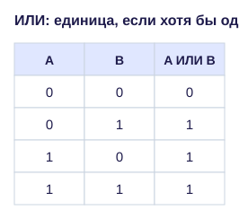
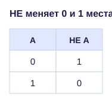
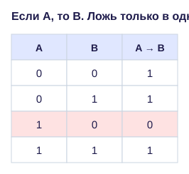
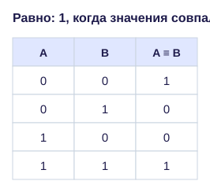
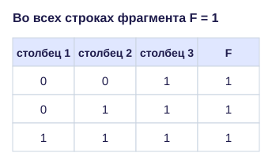
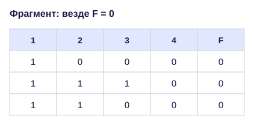
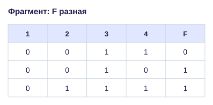

Ученик получает формулу. Буквы в ней равны 0 или 1. После урока он сам видит, что писать в ответ.
В вопросах урока ответ бывает двух видов. Число: сколько строк дали 1. Или три буквы: порядок столбцов. На экзамене букв четыре: w, x, y и z. Ответ пишут четырьмя буквами подряд, слева направо.
В вопросах после теории буквы A, B и C, таблица короче. Примеры в теории уже как на экзамене: четыре буквы, знак «равно» и фрагмент из трёх строк.
Четыре действия и знак «равно».




Для двух букв строк четыре. Для трёх букв строк восемь. Для четырёх букв строк шестнадцать. Скобки считают первыми, потом НЕ, потом И, потом ИЛИ, потом стрелка, потом знак «равно».
Стрелку на бумаге быстрее помнить одной ложной строкой. Знак ≡ не переписывают: смотрят, совпали буквы или нет.
Дальше три приёма. Первый: буквы подписаны, считают единицы по полной формуле. Второй: в показанных строках F везде 0 или везде 1. Третий: в фрагменте F разная, столбец из нулей букву сам не называет.
Это обычный случай. Формула дана целиком, столбцы подписаны. Спрашивают одно число: сколько строк, где F равно 1.
На экзамене строк шестнадцать. Все выписывать не нужно: формула сама отсекает целые группы.
Пример. (x ∨ y) ∧ ¬(y ≡ z) ∧ ¬w. Это формула из демоверсии. Буквы подписаны.

Ответ: 3.
Программа в конце урока печатает это 3. В вопросах ниже буквы A, B и C, таблица короче. Считают тем же способом.
Нажмите «В интерпретатор» под кодом. Программу можно менять и запускать заново.
def F(x, y, z, w):
return 1 if ((x or y) and (not (y == z)) and (not w)) else 0
count = 0
for x in (0, 1):
for y in (0, 1):
for z in (0, 1):
for w in (0, 1):
if F(x, y, z, w):
count += 1
print(count)Здесь дают не всю таблицу, а три строки. F в них одинаковая: либо везде 1, либо везде 0. Ноль и единица подсказывают разное. Если их перепутать, столбец назовут не той буквой.
Сначала смотрят, какое действие стоит снаружи.
Пример, где везде F = 1. Та же формула, что в первом приёме: (x ∨ y) ∧ ¬(y ≡ z) ∧ ¬w. Столбцы без букв. Точка значит пустую клетку. Других строк с F = 1 у формулы нет.

Ответ: zyxw.
Пример, где везде F = 0. Другая формула: ((w → y) → x) ∨ ¬z. Снаружи ИЛИ. Ноль получается, только когда обе части равны 0. Других нулей у формулы нет. Столбцы снова без букв.

Ответ: zywx.
zyxw и zywx — разные ответы. Буквы пишут слева направо, как стоят столбцы.
Программа в конце урока печатает zyxw для фрагмента с единицами. В вопросах ниже буквы уже подписаны и есть стрелка. Там нужно число по короткой таблице.
Нажмите «В интерпретатор» под кодом. Программу можно менять и запускать заново.
import itertools
def F(x, y, z, w):
return 1 if ((x or y) and (not (y == z)) and (not w)) else 0
fragment = [
(1, None, 1, None, 1),
(0, 1, None, 0, 1),
(None, 1, 1, 0, 1),
]
blanks = [
(i, j)
for i, row in enumerate(fragment)
for j, cell in enumerate(row[:4])
if cell is None
]
good = []
for perm in itertools.permutations("xyzw"):
for fill in itertools.product((0, 1), repeat=len(blanks)):
grid = [list(row[:4]) for row in fragment]
for (i, j), bit in zip(blanks, fill):
grid[i][j] = bit
if len({tuple(line) for line in grid}) != 3:
continue
ok = True
for line, src in zip(grid, fragment):
env = dict(zip(perm, line))
if F(env["x"], env["y"], env["z"], env["w"]) != src[4]:
ok = False
break
if ok:
good.append("".join(perm))
break
print(good[0])Снова дают три строки, столбцы без букв. F в них разная: где-то 0, где-то 1. Столбец из нулей букву сам не называет. Эти нули просто попали в выбранные строки.
Ученик подставляет порядок букв и проверяет каждую строку. Подходит один порядок. Его пишут четырьмя буквами подряд, слева направо.
Пример. Формула с экзамена, снаружи ИЛИ: ¬(x → z) ∨ (y ≡ w) ∨ y.

Ответ: xyzw.
В вопросах ниже букв три. Порядок ищут так же: подставляют и проверяют каждую строку. Программа этого примера печатает xyzw.
Нажмите «В интерпретатор» под кодом. Программу можно менять и запускать заново.
import itertools
def F(x, y, z, w):
arrow = 1 if ((not x) or z) else 0
same = 1 if y == w else 0
return 1 if ((not arrow) or same or y) else 0
fragment = [
((0, 0, 1, 1), 0),
((0, 0, 1, 0), 1),
((0, 1, 1, 1), 1),
]
good = []
for perm in itertools.permutations("xyzw"):
ok = True
for shown, value in fragment:
env = dict(zip(perm, shown))
if F(env["x"], env["y"], env["z"], env["w"]) != value:
ok = False
break
if ok:
good.append("".join(perm))
print(good[0])